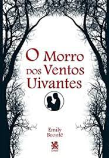
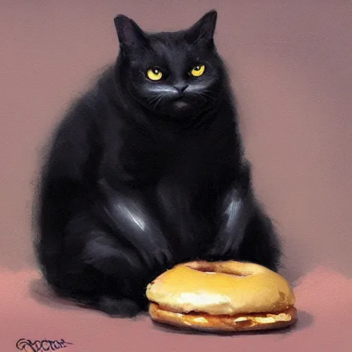
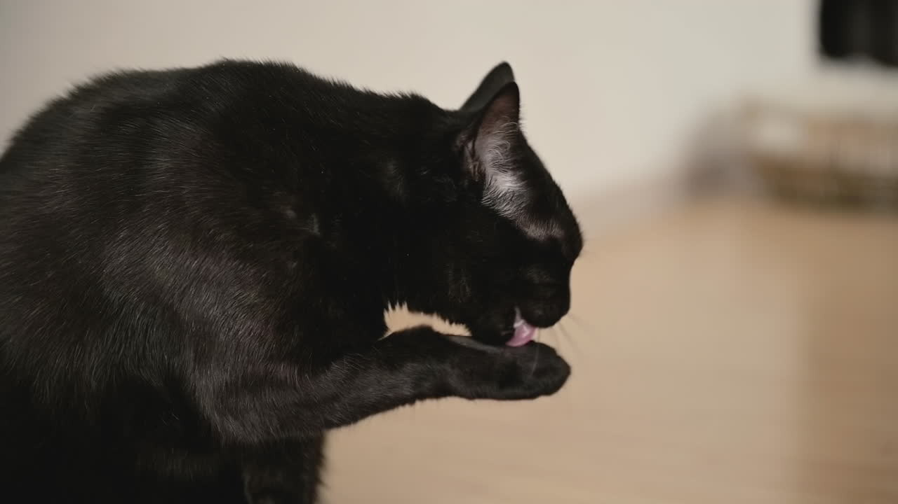

Maynara Lino
Sobre
Nasci em um dia ensolarado de 8 de fevereiro de 1996, na zona oeste de São Paulo, Brasil. Desde pequena, sempre fui apaixonada por música e tinha uma fascinação especial pelo ritmo. Aos 12 anos, descobri minha paixão pela bateria e nunca mais olhei para trás.
Minha jornada musical me levou a ser membro de uma banda indie de Shoegaze incrível chamada Turmallina. Tocar bateria na banda trouxe uma mistura de emoções, desde a excitação de tocar em shows até a conexão que sentia com meus colegas de banda durante as longas sessões de ensaio. A música sempre foi minha fuga, meu meio de expressão e minha paixão mais profunda.
Apesar de minha dedicação à música, sempre valorizei a educação e acreditei no poder da aprendizagem contínua. Decidi seguir uma carreira na área de Tecnologia da Informação e comecei a estudar Análise e Desenvolvimento de Sistemas no Instituto Federal de São Paulo (IFSP). A combinação da minha paixão pela música com o fascínio pela tecnologia sempre foi um ponto de equilíbrio em minha vida.
Atualmente, moro no centro de São Paulo, imersa na vibrante atmosfera da cidade. Enquanto estudo no IFSP, também embarquei em uma emocionante jornada profissional. Trabalho na Sumup, uma fintech inovadora, como parte do time de People Analytics para um setor global sediado na Alemanha. A oportunidade de trabalhar em uma empresa global trouxe desafios empolgantes e a chance de aprender com uma equipe diversificada de colegas ao redor do mundo.
Minha carreira na Sumup despertou um novo interesse em mim: a ciência de dados. Decidi que quero me tornar uma cientista de dados e continuar crescendo dentro da Sumup, contribuindo com meu conhecimento e paixão pela análise de dados para impulsionar o sucesso da empresa. Minha visão é construir uma carreira sólida e gratificante dentro da empresa, uma jornada que espero trilhar até a aposentadoria.
O futuro é incerto, mas estou determinada a enfrentar os desafios, aprender continuamente e seguir minha paixão pela música e tecnologia, construindo uma carreira gratificante e realizando meus sonhos na Sumup e além.
Jogos Favoritos
| Jogo: | Nome: | Gênero: |
|---|---|---|
 |
Cyberpunk 2077 | RPG de Ação |
 |
The Last of Us 2 | Survival Horror |
| Silent Hill 1 | Terror |
Filmes Favoritos
| Filme: | Nome: | Gênero: |
|---|---|---|
| O Auto da Compadecida | Comédia | |
 |
Homem Aranha | Ação |
| Olhos Famintos 2 | Terror |
Livros Favoritos
| Livro: | Nome: | Gênero: |
|---|---|---|
|  | O Morro dos Ventos Uivantes | Romance |
| Harry Potter e a Pedra Filosofal | Aventura | |
 |
O Iluminado | Terror |
Pets
Matilda
Maldita, um poderoso demônio do submundo, cansada do caos infernal, decidiu explorar a Terra sob a forma de uma gata chamada Matilda. Com sua aparência fofa e gorducha, ela manipulava sutilmente os humanos usando seus olhos hipnóticos, influenciando suas decisões.
Vivendo entre os humanos, Maldita observava suas fraquezas e desejos, alimentando o caos emocional ao seu redor. No entanto, a convivência com pessoas amorosas começou a despertar sentimentos desconhecidos dentro dela, dividindo-a entre sua natureza demoníaca e os afetos humanos.
Assim, Maldita enfrentava um dilema entre seu dever como demônio e os laços emocionais que estava desenvolvendo na Terra, questionando sua própria essência diante das experiências vividas.
Hobbies da Matilda
| Livro: | Nome: |
|---|---|
|  | Comer |
| Jogar areia pela casa inteira | |
|  | Se lamber |